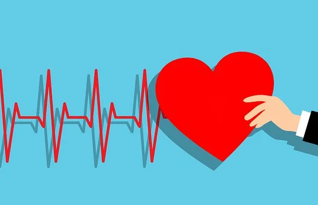

Cardiovascular Exercises

What Is Cardio?
Cardiovascular exercises are physical activities that aim to improve the heart and lungs' endurance by increasing the oxygen intake and circulation in the body. Cardio is one of the two main types of workouts: aerobic and anaerobic exercise. Both types of exercise are essential for a healthy brain and body. They can also help people who are trying to lose weight.
Anaerobic exercise involves high-intensity movements. These movements work your muscles so hard that you can only sustain them in short bursts.
Examples of anaerobic exercises:
- Sprinting
- High-Intensity Interval Training (HIIT)
- Weightlifting
Aerobic exercise is also known as cardio. Cardio workouts involve the use of the larger muscle groups and activities that require repetitive movements for an extended period. Unlike anaerobic exercise, our bodies can sustain these workouts for lengthier periods. Cardiovascular exercises work by increasing the heart rate and breathing rate, facilitating the blood flow and oxygen supply to the muscles' cells.
Examples of aerobic exercises:
- Taking the stairs
- Mowing the lawn
- Cycling
- Rowing
Benefits of Cardio Exercises
Cardio exercises have several benefits, listed below.-
Improved cardiovascular health
Cardio exercises can help improve the health of the heart, blood vessels, and lungs. It reduces the risk of heart diseases, lowers blood pressure, and improves circulation in the body. -
Weight loss
Cardio exercises are great for burning calories and help in weight loss. It helps in shedding excess body fat, which can improve overall health and self-esteem. -
Reduced stress and anxiety
Cardio exercises can help reduce stress and anxiety levels in individuals. It promotes the release of endorphins, which is a natural mood booster, and improves overall mental health. As the heart rate and breathing increase, endorphins, the body's natural mood boosters, are released, improving the mood, reducing stress, anxiety, and depression. -
Improved sleep
Cardio exercises can help improve sleep quality and duration. It helps in falling asleep faster, staying asleep longer, and improving the overall sleep cycle. -
Increased stamina
Cardio exercises can help improve overall endurance and stamina levels. It enables individuals to work out for longer periods of time, leading to more calories burned and better overall fitness levels. -
Reduced risk of chronic diseases
Cardio exercises reduce the risk of chronic diseases like diabetes, stroke, and some forms of cancer. It improves overall health and reduces the risk of premature death. -
Improved cognitive function
Cardio exercises can improve cognitive function by enhancing blood flow and oxygen to the brain. This leads to better focus, concentration, and overall mental clarity. Exercising regularly also enhances brain function and cognitive abilities, improving memory, focus, and decision-making skills. -
Improved metabolism
Cardio exercises can increase metabolism, which is the rate at which the body burns calories. This leads to better overall health and fitness levels, and promotes weight loss and weight management. -
Improves lung health
As the body adapts to the increased demand for oxygen, the respiratory and cardiovascular system improves, making it more efficient for the body to perform physical activities. This, in turn, strengthens the heart, lungs, and other muscles, reducing the risk of cardiovascular diseases, diabetes, and obesity.